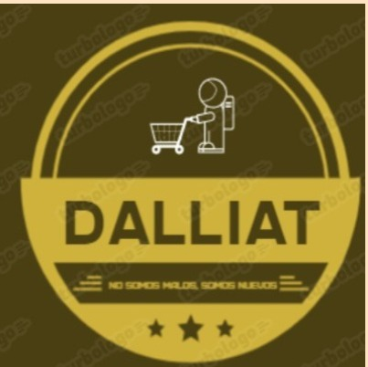

Este proyecto esta basado en promover el crecimiento de los emprendedores en Bogotá, generando un impacto positivo a la sociedad en lo ecónomico, ya que actualmente la economía se ve afectada por diferentes causas. Esta app proporcionaría a los emprendedores dar a conocer sus productos y servicios para que así los clientes conozcan acercan de los diferentes emprendimientos contribuyendo a la economía local. Así mismo, los pequeños emprendimientos podran adquirir un musculo financiero y crecimiento de la microempresa.
|  |
|